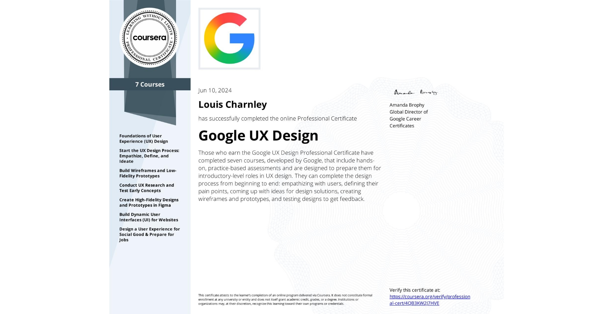

BSc Web and User Experience Design student at Manchester Metropolitan University, focused on optimising internal and external digital platforms through intuitive, accessible interface design that facilitates business workflows.
Understanding the problems and designing the solutions.
MMU Library: Web Information Architecture Redesign
Helping Manchester Metropolitan University’s Library department’s services reach out to more students through the revision of their website content.
MMU Library: Ticket System Suggestion
Proposing and designing a centralized ticketing system integration for MMU’s Library department to streamline student inquiries and improve service accessibility.
Triad: Integrated booking system for the NHS
To investigate the problems users are facing and design a booking system to improve patient waiting lists and streamline the booking process for the NHS.
Designing accessible digital experiences.
Mallorca Sailing: Web Development
To build a website using a Content Management systems (CMS) and using HTML, CSS, and JavaScript with Application Programming Interfaces (API) integration.
Certificates
Triad: Certificate of Completion
-1.png)
Google UX Professional: Certificate of Completion

MMU Library: User Experience Design
Role: UX Researcher and Designer
Timeline: 6 Weeks
Context: Manchester Metropolitan University Project (2nd Year)
Goal: Helping Manchester Metropolitan University’s Library department’s services reach out to more students through the revision of their website content.
The Response: I began with heuristic evaluations and cognitive walkthroughs to identify design and navigation flaws, synthesising the findings into a persona and user journey map. I interviewed library stakeholders to cross-reference my data with their insights to measure initial alignment. I then collaborated with a peer to simplify technical terminology and validate revised navigation and visual hierarchy through wireframe sketches, where we then converted these validated ideas into a high-fidelity prototype. We then conducted user testing to measure the redesign’s success and identify and amend overlooked design flaws.
The Result: We presented the project to the stakeholders, who have since implemented some of our proposed ideas into their development stage.

MMU Library: Ticket System Integration
Role: UX Researcher and Designer
Timeline: 2 Weeks
Context: Following our project presentation with stakeholders, our ideas were met with genuine interest. We were given the opportunity to expand on other design solutions that would benefit the Library Department such as its integration into the university’s ticket system. This project was collaborative and self-led. (2nd Year)
Goal: Helping Manchester Metropolitan University’s Library department’s services reach out to more students through the revision of their website content.
The Response: My peer and I carried out secondary research into the pros and cons of using a ticket system compared to emails as a form of contact with students. This effort stemmed from feedback gathered during the usability test, where some participants expressed reluctance to email. Based on the university’s ticket system linking other departments, we redefined technical terms for better categorisation and smoother integration of the library department. We also modernised the UI to integrate it with the rest of the university’s main design system.
The Result: We presented the entirety of the project to all Library department stakeholders, who confirmed that most of our redesign suggestions, most notably the ticket system, were part of their development strategy, with some being heavily inspired by our previous presentation.

Triad: Integrated booking system for the NHS
Role: UX Researcher and Designer
Timeline: 6 Weeks
Context: Manchester Metropolitan University and Triad design challenge open to all years studying for a bachelor's degree in Web and User Experience Design at MMU. (1st Year)
Goal: To investigate the problems users are facing and design a booking system to improve patient waiting lists and streamline the booking process for the NHS.
The Response: I looked at all the different stakeholders that would be impacted by a revision of the current booking process, which involved understanding the different booking systems that exist and how each party communicates with one another. I then conducted primary research, using interview scripts focusing on communication issues between stakeholders within the current booking system to determine clear pain points. Based on findings, I created personas, a user journey map, and a problem statement to synthesise data for a clearer visualisation of the problem and future communication to clients. The high-fidelity prototypes presented a hub centralising past and future visits with clear “next-steps” to keep all stakeholders informed, much like MyMFT.
The Result: Strong praise from the Triad reviewer for the solution, especially for the research, with improvement opportunities for the presentation of information in the prototype. This project was hypothetical and therefore there were no real clients.

GMCA + Barclays Buildathon: User Experience Design
Add your project details here.
Mallorca Sailing: Website Development
Role: Web Developer
Timeline: 6 Weeks
Context: Manchester Metropolitan University Project (2nd Year)
Goal: To build a website using a Content Management systems (CMS) and using HTML,CSS, and JavaScript with Application Programming Interfaces (API) integration.
The Response: The purpose of the website aims to inform users about the past and upcoming sailing events in Mallorca (Spain). It also aims to create a local community with the implementation of a community forum (demo). I plan to expand on the content following on from feedback with a potential user making the outreach cover the whole of the Mediterranean. Pages include: home page (index), events page (events), learn page (learn), forum page (forum), and the first event page (eventpage).
Accessibility: Both websites were designed abide by the Web Content Accessibility Guidelines with my custom-coded website reaching scores of 95% (abiding UK law).
Link to site: https://lochar8.github.io/miniature-barnacle/